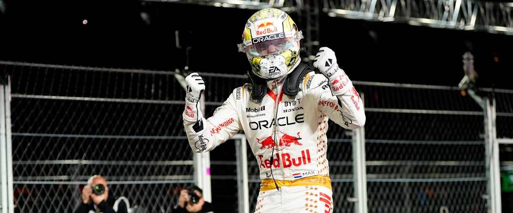
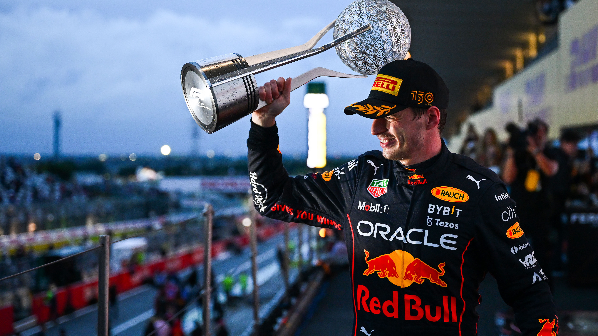

SportsBlog newsletter 11/20: Vivaaaa Las Vegas!
Welcome to the SportsBlog Newsletter in article form!
Every Monday morning, the SportsBlog staff sends a comprehensive email covering all the biggest news in the sporting world from the week that was.
With three featured stories, a deeper look into NFL, NHL, NBA, MLB, and soccer news, a 'This Day in Sports History' section, and a 'Video of the Week,' the SportsBlog newsletter makes sure you never miss a story or crazy moment!
If you want the newsletter delivered directly to your inbox every Monday, subscribe here! Share with a friend and enjoy!
Featured Stories

FORMULA 1 LATE NIGHT PRACTICE, DRAIN COVERS, AND YET ANOTHER MAX VERSTAPPEN WIN IN LAS VEGAS!
Max Verstappen won the Las Vegas Grand Prix after initially disliking the excess and opulence of the event. The event was filled with celebrities and entertainment but had a successful ending with Verstappen's victory and praise for the track. Despite some issues during practice, the race was considered one of the most lively of the season. Ferrari driver Charles Leclerc and Verstappen's teammate Sergio Perez also had a strong race finishing second and third, respectively. A drain cover on the track drew the most attention by damaging Carlos Sainz's car severely in Free Practice 1 - resulting in a major delay and a 10-second penalty to Sainz for the damages that had to be fixed (stupid I know)
Next up: The finale of the 2023 season at the Abu Dhabi Grand Prix on Sunday!
WOMEN'S COLLEGE BASKETBALL: LSU TIGERS STAR ANGEL REESE INVOLVED IN OFF-COURT DRAMA!
Something is going on behind the scenes with LSU women's basketball star Angel Reese. Kim Mulkey, LSU women's basketball coach, refused to discuss the absence of Angel Reese - who was not with the team for a recent game. Reese's absence follows her being benched in the previous game and Mulkey said it was "a coach's decision." Despite this, the team has a strong lineup and is expected to compete for a second consecutive national title.
NBA: SUNS WILL BE WITHOUT GUARD BRADLEY FOR A FEW WEEKS
Bradley Beal will be out for at least three weeks due to a back injury, impacting the Phoenix Suns' plan to create a powerful trio with him and Devin Booker. The team will reevaluate his condition in three weeks. The Suns are 7-6 after a dramatic win over the Utah Jazz last night.
In Other News

NFL
Week 11 scores
Baltimore Ravens 34 - Cincinnati Bengals 20
Jacksonville Jaguars 34 - Tennessee Titans 14
Green Bay Packers 23- LA Chargers 20
Washington Commanders 19- New York Giants 31
Miami Dolphins 20 - Las Vegas Raiders 13
Houston Texans 21- Arizona Cardinals 16
Detroit Lions 31 - Chicago Bears 26
Cleveland Browns 13 - Pittsburgh Steelers 10
Carolina Panthers 10 - Dallas Cowboys 33
San Francisco 49ers 27 - Tampa Bay Bucs 14
LA Rams 17 - Seattle Seahawks 16
Buffalo Bills 32 - New York Jets 6
Denver Broncos 21 - Minnesota Vikings 20
Kansas City Chiefs vs. Philadelphia Eagles (tonight @ 8:15 EST on ESPN)
Storylines
The Ravens picked up a win over the Bengals on Thursday Night Football, but the main story was the injury to Joe Burrow. Burrow has a right wrist injury that will keep him out for the rest of the season. It's a very unfortunate injury, as the Bengals had high hopes this season.
Josh Allen and the Bills got back on track against the Jets on Sunday. Buffalo won 32-6. Allen had a strong performance, throwing for 275 yards and 3 touchdowns. The defense did a stellar job shutting down New York. With the win, the Bills are sitting at 6-5 and in the thick of the AFC playoff race.
The Lions pulled off a tremendous comeback to beat the Bears 31-26. Detroit outscored Chicago 17-6 in the 4th quarter. Jared Goff had a tough day, throwing 3 interceptions, but he turned it on late and played his best when it mattered most. The Lions are now 8-2 and in firm control of the NFC North.
Brock Purdy had himself a day against the Tampa Bay defense. Purdy went 21/25 with 333 yards and 3 touchdowns. The 49ers beat the Buccaneers 27-14. San Francisco went through some struggles a couple of weeks ago but they are back to being their dominant self. The 49ers are 7-3 and in first place in the NFC West.

COLLEGE FOOTBALL
AP Poll Rankings after Week 12
- Georgia Bulldogs (11-0)
- Ohio State Buckeyes (11-0)
- Michigan Wolverines (11-0)
- Washington Huskies (11-0)
- Florida State Seminoles (11-0)
- Oregon Ducks (10-1)
- Texas Longhorns (10-1)
- Alabama Crimson Tide (10-1)
- Louisville Cardinals (10-1)
- Missouri Tigers (9-2)
Storylines
The biggest news in college football this weekend wasn't the outcome of a game, but rather an injury to Florida State quarterback Jordan Travis. Travis looked to suffer a gruesome left leg/ankle injury in the Seminoles game against North Alabama. It appears Travis will be out for the year, but his injury status remains unknown.
Georgia is playing some of the best football of their season in recent weeks. The Bulldogs dismantled Tennessee 38-10 on the road. That's as impressive as it gets against a solid Volunteer football team. Georgia outgained Tennessee by 195 yards.
It may not always be pretty but Washington continues to win football games. The Huskies are a gutsy football team and it showed again on Saturday night. Washington went into Oregon State on a rainy night and picked up a 22-20 win. Michael Penix Jr. and company are now 11-0 on the year.
Ohio State and Michigan both won on Saturday to set up their highly anticipated showdown. Ohio State crushed Minnesota at home 37-3, while Michigan did enough to beat Maryland 31-24. Next week's battle of the unbeaten's will take place in Ann Arbor.
On This Day in Sports
CLOSES 2022 WITH WIN
On this day last year, Red Bull's Max Verstappen won his 15th race of the season at the Abu Dhabi GP to close out his second-consecutive Drivers Championship campaign with 454 points. In 2023, Verstappen just won his 20th race of the season (out of 23 possible races) and has 549 points before the finale this weekend!
Video of the Week
Denver Broncos wide receiver Courtland Sutton makes a phenomenal catch EVERY WEEK! This time, he's back with a game-winning TD snag in the back of the endzone! That's five games in a row he has had a TD catch!
If you enjoyed the newsletter, be sure to follow by clicking this link and signing up!